스웨덴에서 맛보다, 북유럽의 식탁.
피카(fika)부터 미트볼, 절인 청어, 시나몬 번까지 — 발트해의 식탁을 한국인 입맛 기준으로 다시 차려놓은 가이드.
스톡홀름·예테보리·말뫼 세 도시의 맛집 24곳, 꼭 먹어봐야 할 16가지 요리, 5일치 미식 코스, 실전 회화와 식사 매너, 그리고 음식 예산 계산기까지. 한 페이지에서 끝나는 식탁용 메모.
당신만의 하루 식탁.
도시 · 시간 · 취향만 골라주면 트램·튠넬바나 노선까지 물려서 인쇄 가능한 미식 동선을 짭니다. 종이로 들고 다니세요.
도시별 추천 식당.
미슐랭 별부터 1882년의 비어홀까지 — 도시·예산·종류로 좁혀 보세요. 카드를 누르면 시그니처 메뉴와 실전 팁이 펼쳐집니다.
꼭 먹어봐야 할 스웨덴 음식.
한국인 입맛에 친숙한 메뉴부터 도전 메뉴까지. 첫 글자 이니셜은 스웨덴어 알파벳 그대로.
Köttbullar
크림 그레이비 + 으깬 감자 + 링곤베리 잼. 한국 떡갈비 좋아하면 무조건 OK.
Pyttipanna
감자·소시지·양파를 깍둑 썰어 볶고 위에 달걀프라이. 한국 볶음밥 감성.
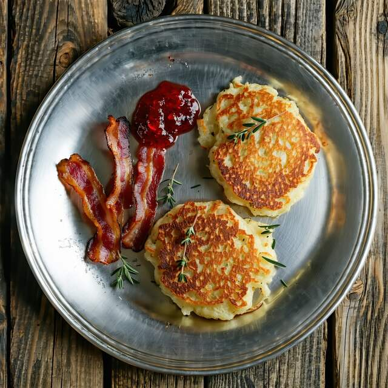
Raggmunk
감자전 + 베이컨 + 링곤베리. 김치만 있으면 한국 감자전이라 우길 비주얼.
Renskav
북부 라플란드 명물. 부드러운 순록 + 크림 소스 + 으깬 감자.
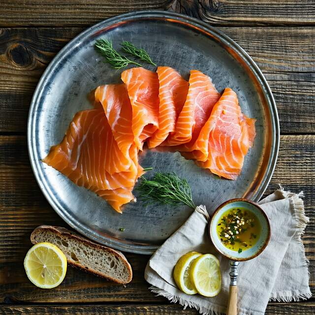
Gravlax
딜·소금·설탕에 절인 생연어. 머스타드-딜 소스가 핵심. 회 좋아하면 강추.
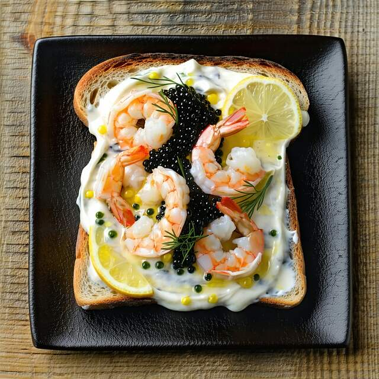
Toast Skagen
구운 빵 위에 새우 + 마요 + 딜 + 캐비어. 와인 한 잔과 환상 페어링.
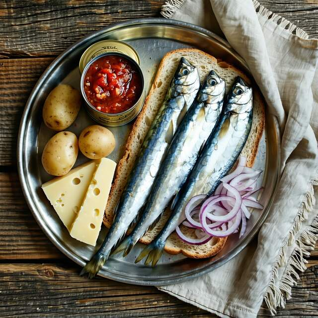
Surströmming
세계에서 가장 냄새나는 음식. 도전자만! 식초·양파와 플랫브레드에 싸 먹기.
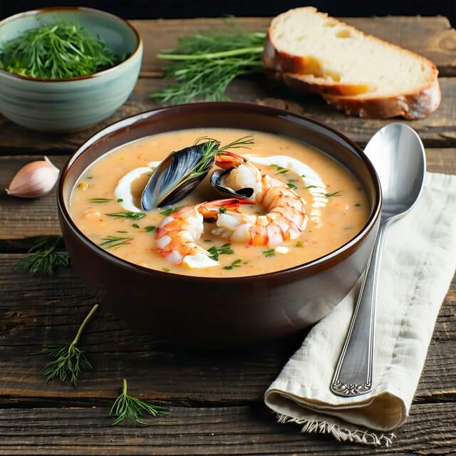
Skaldjurssoppa
새우·홍합·랍스터로 끓인 진한 크림 수프. 차가운 북유럽 밤에 최고.
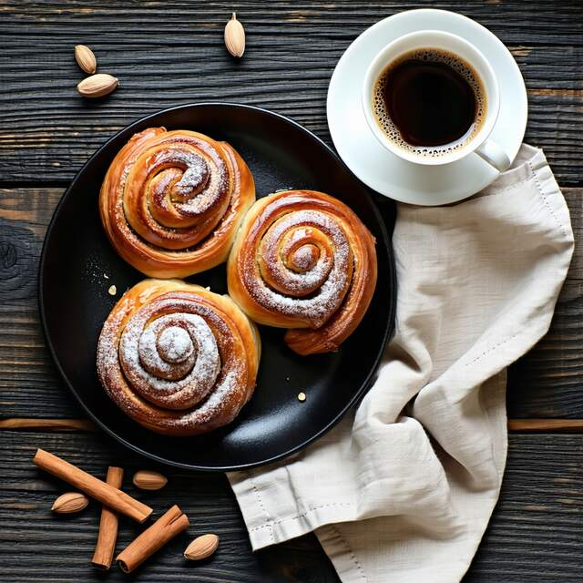
Kanelbulle
10월 4일은 ‘시나몬 번의 날’. 카르다몸 향이 깊습니다.
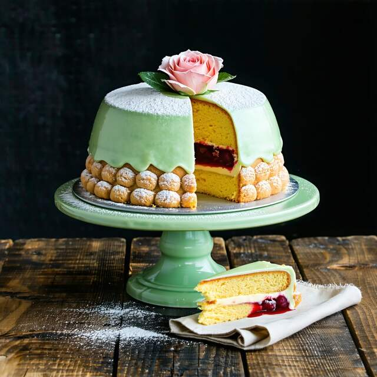
Prinsesstårta
초록 마지팬으로 덮인 크림 케이크. 비주얼·맛 합격.
Semla
아몬드 페이스트 + 생크림 가득. 사순절(2~3월) 한정.
Chokladboll
오트밀 + 코코아 + 버터를 굴려 코코넛에 묻힌 노오븐 디저트.
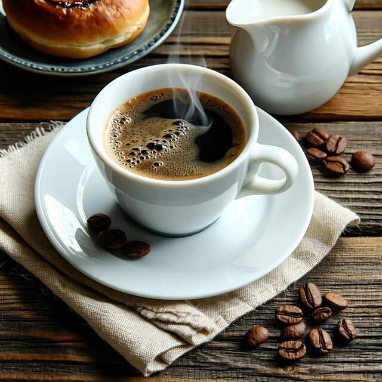
Kaffe (Fika)
스웨덴은 1인당 커피 소비 세계 2위. 진한 필터 커피가 기본.
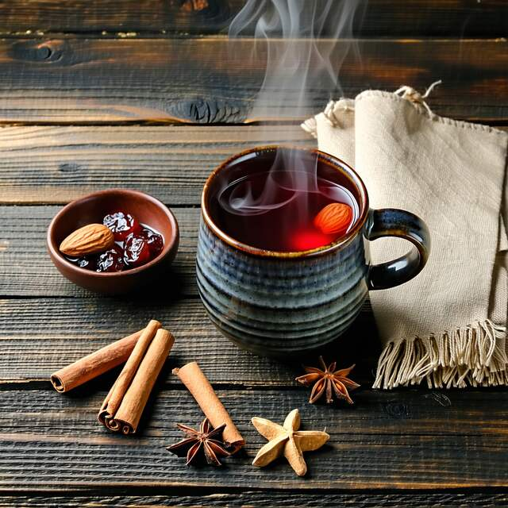
Glögg
겨울 한정 향신료 와인. 아몬드 + 건포도와 함께.
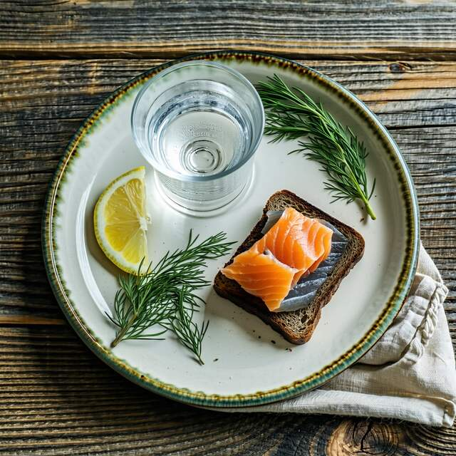
Snaps / Akvavit
식사 중 한 모금씩. ‘Helan går’ 노래 부르며 건배.
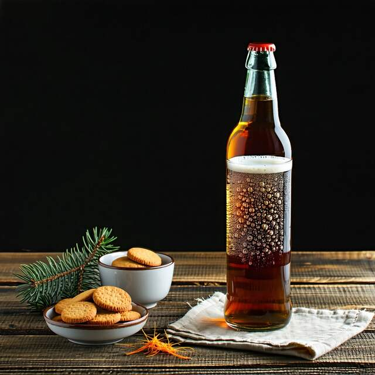
Julmust
12월 한정 탄산음료. 호불호 갈리는 약초 향.
5일 미식 코스.
아침 — 피카 — 점심 — 피카 — 저녁의 황금 루틴. 이동 동선까지 짜놓은 5일.
스톡홀름 도착, 감라스탄 산책.
시차 적응하면서 가볍게. 첫 끼는 무조건 미트볼.
Vete-Katten
1928년 오픈한 전설의 카페. 카넬불레 + 커피로 첫 피카.
Pelikan
쇠데르말름 전통 비어홀. 셰트불라 정석.
Chokladkoppen
감라스탄 광장의 핫초코 카페.
Tradition
전통 스웨덴 가정식. 야손스 프레스텔세 추천.
해산물 데이.
발트해의 신선함을 그대로.
Östermalms Saluhall
1888년 식료품 마켓. 굴 · 새우 · 캐비어 시식.
Sturehof
토스트 스카겐 원조. 와인 한 잔 곁들이기.
Rosendals Trädgård
유르고르덴 섬 유기농 정원 카페. 자연 속 피카.
B.A.R.
그날 잡힌 생선만으로 메뉴.
예테보리로 이동.
서해안 도시. 해산물의 진짜 수도.
스톡홀름→예테보리 SJ 고속열차
3시간. 차창 밖 호수 풍경.
Feskekôrka
‘생선 교회’ — 시장 안 점심.
da Matteo
스웨덴 스페셜티 커피의 성지.
Sjömagasinet
옛 항구 창고 미슐랭 별 레스토랑.
군도 투어 + 채식 도전.
예테보리 군도에서 점심, 도시로 돌아와 저녁.
Styrsö 페리
예테보리 군도. 30분 이내 도착.
Brännö Värdshus
섬 식당의 신선한 생선.
Bhoga
미슐랭 1스타. 채식 코스도 강력.
말뫼 · 한국 입맛 회복.
코펜하겐과 다리로 연결된 도시. 마지막은 친숙한 맛.
Lilla Kafferosteriet
로컬 로스터리.
Bastard
육식러를 위한 정육 레스토랑.
Arirang
마지막 밤은 한식 비빔밥으로 위장 안정.
알아두면 좋은 실전 팁.
눈을 마주치며 ‘Skål!’ 외치기, 줄 설 때 번호표(kölapp), 그리고 식당에서 살아남는 12개 표현.
피카(Fika)는 의무
커피 + 달달한 빵을 곁들인 휴식 시간. 하루 2번이 일반적.
건배는 눈을 보고
“Skål!” 외칠 때 모든 사람과 눈을 맞춰야 합니다.
팁은 의무 아님
서비스료 포함. 만족하면 5–10% 정도 반올림.
예약은 필수
인기 식당은 1–2주 전 예약. 워크인은 어렵습니다.
줄 서기 = 번호표
가게에서는 무조건 번호표(kölapp) 뽑기.
현금 거의 안 씀
대부분 카드 · Swish. 현금 안 받는 가게 많음.
식사 인사
“Smaklig måltid!” 또는 “Tack för maten!” (식사 후).
저녁은 일찍
저녁 식사 18–20시. 22시 이후 주방 마감 잦음.
음식 예산 계산기.
슬라이더로 조정. 환율은 1 SEK ≈ 130원 기준.
도시별 편집판 한 장.
옛 미식면 신문처럼 — 도시 하나를 A4 한 장에 정리해 인쇄합니다. 카페에 펼쳐놓고 손으로 표시하세요.
발트해의 식탁.
감라스탄의 전통 비어홀부터 외스테르말름의 1888년 시장까지. 미트볼·토스트 스카겐·카넬불레의 본진.
해산물의 수도.
생선 교회(Feskekôrka)와 항구 창고 미슐랭. 스페셜티 커피의 성지 da Matteo, 그리고 Haga의 자이언트 카넬불레.
외레순의 입맛.
코펜하겐과 다리로 연결된 도시. 정육 레스토랑 Bastard, 점심 한 가지만 내는 Saltimporten, 그리고 마지막 밤의 한식.
여행자들이 직접 더한 곳.
큐레이션 목록 밖, 한국 여행자들이 실제로 가보고 추천하는 곳. 한 줄 메모를 남기고, 가본 곳에 “실제로 가봤어요”를 눌러 주세요. 추천이 많은 순으로 정렬됩니다.
Stockholm — 스톡홀름의 식탁.
Måste Smakas · 꼭 먹어볼 다섯
Köttbullar
크림 그레이비 + 으깬 감자 + 링곤베리. Pelikan에서 정석.
Toast Skagen
Sturehof가 1897년 원조. 와인 한 잔 곁들이기.
Kanelbulle
Vete-Katten의 카르다몸 향. 줄 길면 번호표.
Gravlax
딜·소금·설탕 24h 절임. 머스타드-딜 소스 필수.
Pyttipanna
감자·소시지·양파 + 달걀프라이. 해장용.
Restauranger · 꼭 가볼 곳
Pelikan
1882년 천장 높은 비어홀. 한국인 입맛에도 친숙한 그레이비. T-bana 19 → Skanstull, 도보 3분.
Östermalms Saluhall
1888년 식료품 시장. 카운터 좌석에서 한 잔과 굴. T-bana 13/14 → Östermalmstorg.
Vete-Katten
긴자 다방 분위기. T-bana 17/18/19 → T-Centralen, 도보 4분.
Fraser · 식탁 회화
Tunnelbana · 노선
Göteborg — 예테보리, 해산물의 수도.
Måste Smakas · 꼭 먹어볼 다섯
Skaldjurssoppa
새우·홍합·랍스터 진한 크림 수프.
Räkmacka
Feskekôrka의 점심 단골.
Haga Kanelbulle
Café Husaren의 머리만한 빵. 둘이 나눠도 충분.
Ostron
Bohuslän산. 레몬 한 방울만.
Husmanskost
Smaka에서 미트볼·청어·라그문크 한 상.
Restauranger · 꼭 가볼 곳
Feskekôrka
‘생선 교회’. 시장 + 식당 + 관광지. Spårvagn 6/11 → Hagakyrkan, 도보 5분.
Sjömagasinet
옛 항구 창고. 노을 시간대 창가석. Spårvagn 3/9 → Klippan.
da Matteo
스페셜티 커피의 성지. 자체 로스팅. Magasinsgatan 도보권.
Fraser · 식탁 회화
Spårvagn · 트램 노선
Malmö — 외레순의 입맛.
Måste Smakas · 꼭 먹어볼 다섯
Dry-aged Stek
Bastard의 노세-투-테일 정육.
Dagens Lunch
Saltimporten — 매일 한 메뉴, 직장인 단골.
Sill
겨자·딜·양파 세 종류. 감자와 함께.
Spettkaka
탑 모양 머랭. 결혼식 단골.
Bibimbap
Arirang — 마지막 밤 위장 회복.
Restauranger · 꼭 가볼 곳
Bastard
육식러 천국. Buss 3/4 → Gustav Adolfs torg, 도보 4분.
Saltimporten
옛 소금창고 → 점심 식당. 인스타로 메뉴 미리 확인. Buss 2 → Hjälmarekajen.
Lilla Kafferosteriet
중세 골목의 다락방 카페. 중앙역 도보 8분.
Fraser · 식탁 회화
Buss · 시내 버스
Smaklig måltid!
맛있게 드세요.
이 가이드가 도움이 됐다면 친구에게 공유해 주세요. 식탁이 한 자리 더 풍성해집니다.